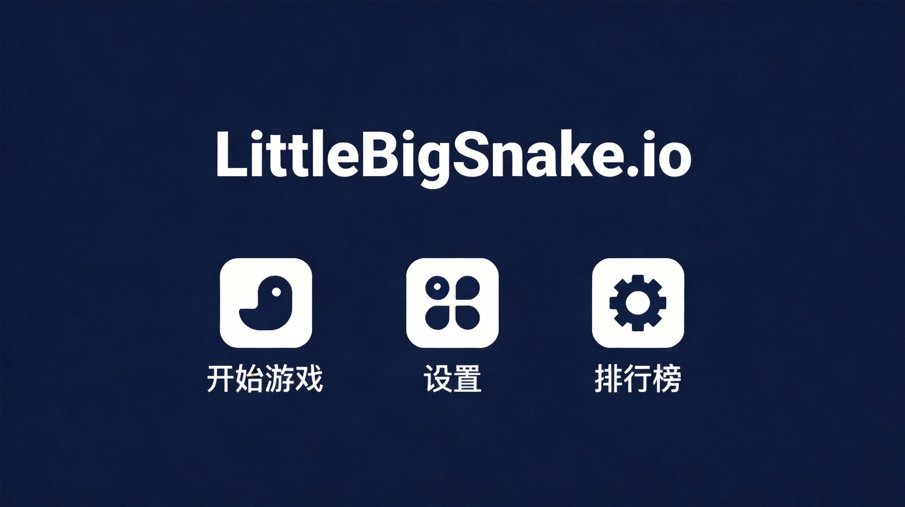
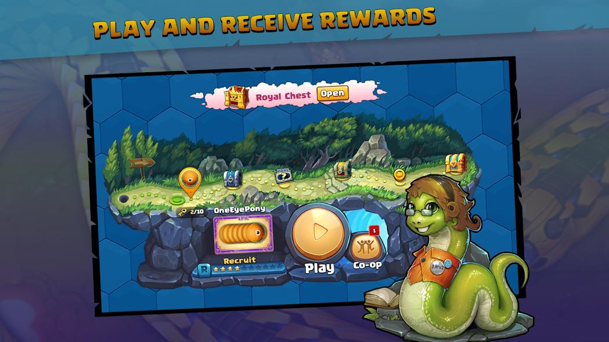
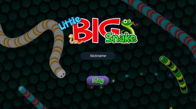
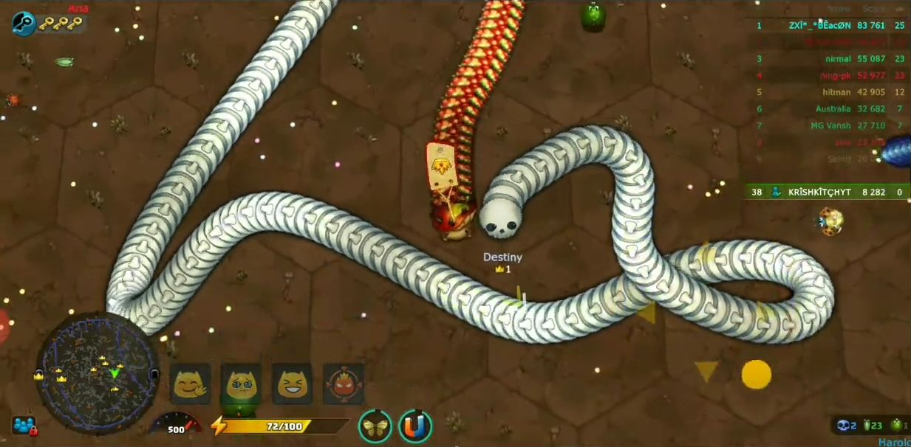

Most snake games give you one thing: a worm. LittleBigSnake.io gives you a worm that can turn into a dragonfly. Yeah. You read that right. As you grow, your snake eventually transforms into a flying insect with completely different movement mechanics. It's one of the most creative twists in the .io genre, and it's why this game has staying power. But reaching that flying form and actually using it well? That's where most players fall short. Let's fix that.
🎯 Game Basics

The Core Loop
LittleBigSnake.io follows the familiar snake-game formula — eat things, grow bigger, avoid dying — but adds a deep progression system and the ability to transform into a flying form. The game has an RPG-like feel where you're not just playing round-to-round; you're earning permanent upgrades and achievements.
Controls
- Mouse — Your snake follows the cursor. Smooth, responsive, almost hypnotic once you get going.
- Spacebar — Dash/boost. Costs energy but lets you close gaps quickly or escape threats.
- Left Click — Attack (when in flying form). Flying insects can fight back rather than just surviving.
Game Modes
- Solo Survival — Practice mode against bots. Learn the mechanics without the chaos of multiplayer.
- Multiplayer Arena — Race against real players. The same rules apply: eat, grow, don't die.
- Team Battle — Play with allies against rival teams. Coordinate growth and attacks for maximum impact.
📈 Growth Mechanics

Eating Food
The primary way to grow. Food items spawn constantly across the map — small glowing orbs, nectar drops, and fruit. Each piece adds segments to your snake. The key to fast growth is efficiency: don't waste movement on single small food items when you can snap up clusters of larger ones nearby.
The Map is Your Supermarket
Don't just eat what's in front of you. Plan your route through the densest food areas. Experienced players fly in wide arcs through the map, picking up everything in their path, while newer players zigzag randomly. The difference in growth speed is enormous.
Energy System
Your dash ability uses energy, which regenerates over time. Managing energy is crucial — don't dash unless you need to. Dashing across the map to grab one food item is almost always a net loss. Dashing to escape a predator or reach a massive food cluster? Worth it every time.
Insects and Creatures
Beyond static food, the map has small insects and creatures you can eat for bonus growth. Some are passive and easy to catch; others fight back. Aggressive insects give more XP and energy but require actual combat. Prioritize the passive ones when you're small; fight the aggressive ones once you're large enough to survive the encounter.
Many players tunnel-vision on glowing food and completely miss the insect population. Insects often provide better rewards than standard food, especially in flying form. Make insect hunting part of your routine.
🦋 Evolution & Flying Form

How Evolution Works
As you accumulate XP, your snake evolves through stages. Early stages are just size increases, but reaching the later stages triggers the metamorphosis into a flying insect. This is the game's signature feature, and it completely changes how you play.
Flying Form Mechanics
Once you transform, your snake becomes a flying dragonfly-like creature with:
- 3D Movement — You can move up, down, and in all horizontal directions. The z-axis opens up the entire vertical space of the map.
- Attack Capability — Flying form has an attack (usually a sting or lunge) that damages other players and insects.
- Higher Speed — Flying form is significantly faster than snake form on a per-segment basis.
- New Vulnerabilities — Flying form has different collision rules and can be hit by attacks more easily.
Using Flying Form Effectively
Flying form isn't just a reward for growing big — it's a tactical tool. Use the vertical movement to swoop down on smaller snakes from above, escape over obstacles that ground-bound snakes can't cross, and navigate tight spaces by flying up and over barriers. Many players in flying form still play like they're on the ground. Don't be that player.
⚔️ Combat Strategies
Snake Form Combat
In snake form, you're playing defense. Your main weapon is your body — use it to box in opponents, block escape routes, and force collisions. You're too slow to chase anyone down, so your fights are won through positioning and prediction rather than raw speed.
Flying Form Combat
In flying form, you're a predator. Your attack ability is your primary tool. Dive-bomb opponents from above, attack and immediately climb to avoid retaliation. Your speed advantage lets you disengage when a fight turns bad. Pick your targets carefully — go for injured players, smaller snakes, or insects rather than wasting energy on massive opponents.
Escape and Pursuit
Whether you're the hunter or the hunted, knowing when to commit and when to retreat is the core skill in LittleBigSnake.io. If you're small and a giant is chasing you, the answer is almost always "retreat." The map is full of obstacles and tight spaces where your small size is an advantage. Use them.
The Death Cascade
When a large player dies, their corpse explodes into dozens of food items, often triggering a chaotic feeding frenzy. This is the best opportunity in the game for rapid growth. Position yourself on the edge of these death sites, grab what you can, and don't get so absorbed in feeding that you forget to watch for competitors who might be bigger than you.

💡 Pro Tips
- Prioritize survival over aggression. One death wipes out all your progress. Aggressive plays are only worth it if the risk-reward math checks out.
- Use the solo mode to practice evolution. Learn what triggers your flying form transformation and what the flying mechanics feel like before risking it in multiplayer.
- Watch for metamorphosis timers. Some versions show you how close you are to transforming. Plan your position before the transformation — you'll be vulnerable for a moment.
- Insect hunting in flying form is underrated. Many players use flying form only for PvP, but aggressive insects in the air give massive XP bonuses.
- Upgrade your snake between lives. The upgrade system is persistent. Even a few upgrades between deaths compounds into significant advantages over time.

❓ Frequently Asked Questions
Q: How do I evolve into flying form in LittleBigSnake.io?
A: You need to accumulate enough XP through eating food and insects. As you cross certain XP thresholds, you progress through evolutionary stages until you eventually transform into a flying insect form. The exact XP requirements depend on the game version.
Q: What's the difference between snake form and flying form?
A: Flying form has access to 3D movement (including vertical movement), can attack other players with a sting/lunge ability, and moves faster. However, it has different collision rules and is more vulnerable in certain situations.
Q: Can I play LittleBigSnake.io with friends?
A> Yes, team mode allows you to play cooperatively with friends against rival teams. Coordinate your growth and attacks for the best results.
Q: What are the best upgrades for beginners?
A: Focus on upgrades that increase your starting size and energy regeneration. These give you a safer early game and more dash opportunities to escape predators.
Q: Does LittleBigSnake.io have a save system?
A: Yes, the game saves your XP, upgrades, and achievements between sessions. Your progress carries over when you return to the game.
Q: How do I escape a larger snake?
A: Use tight spaces, corners, and obstacles where your smaller size is an advantage. Dash only when absolutely necessary to conserve energy. Never run in a straight line — unpredictable movement is harder to intercept.
Q: Is LittleBigSnake.io free to play?
A> Yes, it's free to play in your browser with optional cosmetic purchases available in the in-game store.
LittleBigSnake.io is one of those .io games that actually rewards mastery. The snake-to-dragonfly transformation isn't just a gimmick — it's a genuinely different way to play. Learn both forms, respect the food economy, and remember: death is the enemy of growth.